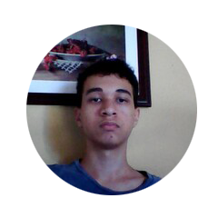

|  |
EMANAS
About Me
I'm a guy who discovered how pathetic he is and started to do effort to become better.I did start to draw in 2018(of course i drawed my entire life but in my 12's i stopped),after about 1 year of study a lightning struck the electric current screwing up my PC.Some months after i was lucky to have my neighbor lend me her computer,even though he was older than me,it was of great help.
In the beggining of my Art Journey i was totally obsessed with it, but after two years of no doing any physical exercise and almost never going out home i got really anxious and depressed ,and weak obviously.While my weight increased my focus got worse everyday more,i was always looking up for distractions and immediate rewards, of 12 hours i did spend on my PC maybe only four hours was really studying.And to make it even worse i started to watch porn many times per week and got really addicted,there was times when i watched it many times per day , and that horrible feeling always came after doing that . I was a master of being miserable and this was not the end already... After consuming so much porn i started to think of things i never did befor, my mind was really sick, i was no longer the cool christian kid ,all in my mind was darkness and sin,when i looked at woman i only saw them as objects.In the pandemic that gott much worse because i was many times watching porn all day.For me to overcome my vices was a huge obstacle , i failed many,many times until i got a streak of six months without porn/masturbation e after that a failed again many times .I hit rock bottom,i was hopeless and expecting to die sooner , and of course i would because a was sick mentally and phisycally,i did not say here but when i was 15 i failled at school and had to start again ,although i did't care about it would change my life for ever.In that year the school decided to put together all repeating students in the same classroom, in that year many older guys where there ,in that year i got beat up at school by a guy called Helio and that was kind of life changer for me , because before i knew that i was insecure,weak but i act as i was strong.After beeing beat up i notice how i was pathetic to the point that i noticed that i could't call myself a man because i was a coward who didn't fight back.Back again to pandemic time i was hating myself so much that everytime that i looked myself on the mirror i said it out "I hate you,you are a coward,useless...."and when i got to hate who i was totally i decided from the bottom of my heart to change,i then stopped watching porn,masturbating and it's been almost a year since the last time i did this ,i start to run and chalistenics,and for a month i was doing gym but a came back to chalistenics.I can't say that i am already a epic hero like Luffy,Zoro,Tanjiro but i am on the way to become the who i always wanted to be i am writing this 11/10/2022 , i do waste time with social media yet and a have a lot of weakness to kill , but i had overcome my vices and this only is a huge thing, i am not tempted to watch porn everytime i'm alone in house anymore,i don't look to people with bad eyes anymore ,and i'm getting closer to god again ,well maybe someday i write here again about my journey to became a baddas anime character see you later.
|